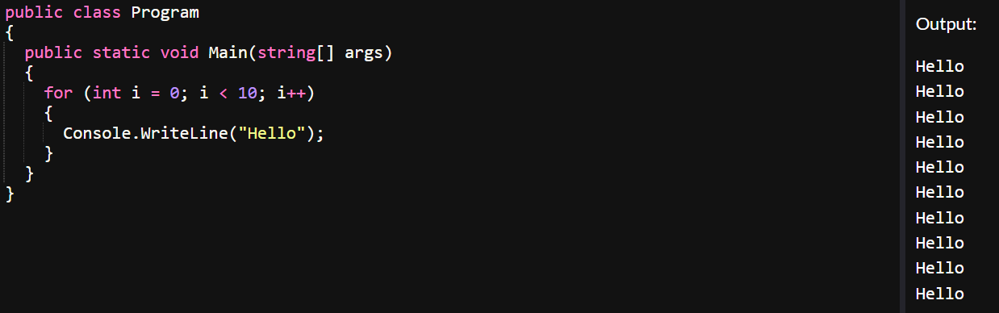
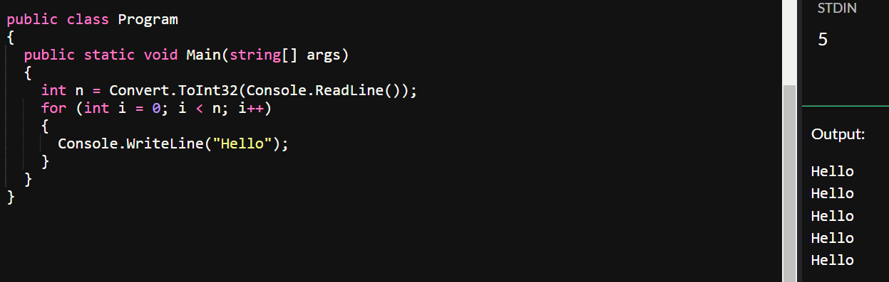
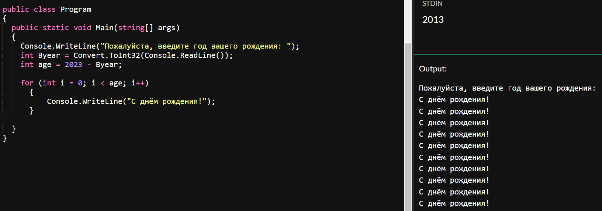
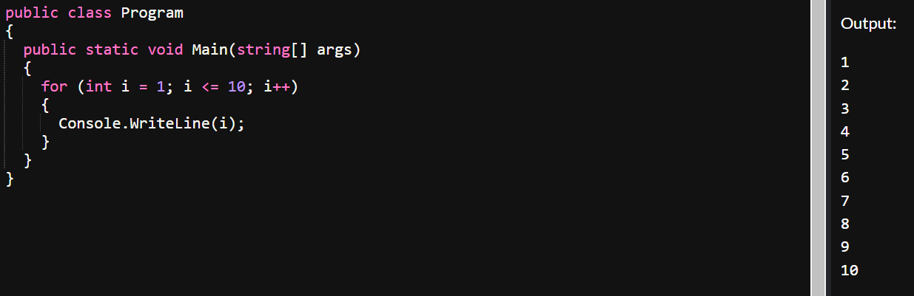

главная
лекции
задания
главная
лекции
задания
Часто нам необходимо повторить одну и ту же операцию определенное число раз. В языке C# для этого используется цикл for.
Параметром цикла будет та переменная, которая отвечает за количество его повторений. Грубо говоря, изначально эта переменная равна нижней границе промежутка значений, далее к параметру цикла каждое повторение прибавляется единица, и переменная сравнивается с условием (промежутком значений). Цикл может работать как с заранее заданными значениями, так и с переменными. Например, нам нужно вывести слово “Hello” 10 раз:
А вот как будет выглядеть код, если количество повторений нам заранее неизвестно – просто используем вместо числа переменную:
Теперь, когда мы ознакомились с примерами использования цикла, рассмотрим его более подробно.
Обычно части цикла for выполняют следующие шаги:
1. Установка начального значения.
2. Выполнение проверки условия для продолжения цикла.
3. Выполнение действий цикла.
4. Обновление значения (значений), используемых в проверочном условии.
и далее шаги 2-4 повторяются до тех пор пока условие выполняется. Как только условие становится ложным, цикл прекращает свою работу.
На примере нашей задачи из прошлых лекций попробуем применить цикл for. Пользователь должен ввести в консоль свой возраст, а программа поздравит его с днем рождения за каждый год:
Как видно из примера, мы можем использовать переменную-параметр при выводе данных. Например, с помощью цикла for мы можем написать программу вывода всех целых чисел от 1 до 10:
